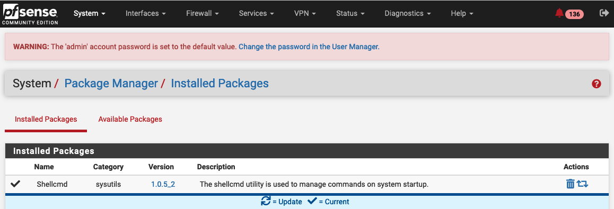

pfSense
ntopng Pro/Enterprise can be installed on pfsense using the command line. This requires the configuration of the FreeBSD repository (FreeBSD 14 for pfSense CE 2.7) as described at https://packages.ntop.org/FreeBSD/.
Warning
ntopng will create files on your pfSense device to store traffic data. If you have a device with limited disk space, please configure ntopng to store only a few timeseries to disk othewise you might fill all the available disk space and make your system unstable.
Repository Configuration
Log into the pfsense Shell as administrator (select option 8).

pfsense Shell
And install the repository using the command provided at https://packages.ntop.org/FreeBSD/ (you can cut&paste the command below according to your pfSense edition).
pfSense CE 2.7
pkg add https://packages.ntop.org/FreeBSD/FreeBSD:14:amd64/latest/ntop-1.0.pkg
The output should look like the below.

ntop Repository Installation
pfSense Plus 23.05.01 and later
Latest pfSense Plus is using a custom root certificate chain as default which is preventing the ntop repository package to be installed. In order to overcome this a manual change to the configuration is required.
Create a text file /usr/local/etc/pkg/repos/ntop.conf (note this contains the SSL_CA_CERT_FILE env variable used to specify the root file of the SSL certificates) with the below content, which contains information for the ntop repository:
ntop: {
env: {
SSL_CA_CERT_FILE=/usr/local/share/certs/ca-root-nss.crt
},
fingerprints: "/usr/local/etc/pkg/fingerprints/ntop",
url: https://packages.ntop.org/FreeBSD/${ABI}/latest,
signature_type: "fingerprints",
priority: 100,
enabled: yes
}
Then also create a text file /usr/local/etc/pkg/fingerprints/ntop/trusted/packages.ntop.org.20210108 with the below content:
function: "sha256"
fingerprint: "d912f631f592c3aebc4f59b25ee85b5118d24a50066c6013d736fa64eb0c4cd2"
At this point you should be able to update and install packages from the repository.
Package Installation
Note
If you already have ntopng community build installed from the builtin repository, please remove it and also delete the data directory under /var/db/ntopng to let the new package create it with the right permissions.
Run the below command to install the ntopng package:
pkg install ntopng redis
License Configuration
Note
ntopng Community Edition is free of charge and does not require a license. Skip this section if you want to run ntopng in Community mode.
Run the below command in order to get all the information required by the license generator (Version and System ID).
/usr/local/bin/ntopng -V
The license should be installed under /usr/local/etc/ntopng.license
echo LICENSE_KEY > /usr/local/etc/ntopng.license
ntopng Configuration
A sample ntopng configuration file is located under /usr/local/etc/ntopng/ntopng.conf.sample, please copy it to /usr/local/etc/ntopng.conf (it is recommended to keep the ‘ntopng’ user as owner) and open it with the preferred editor in case the default settings should be modified. Add a new line with the –community option to run ntopng in Community mode.
cp /usr/local/etc/ntopng/ntopng.conf.sample /usr/local/etc/ntopng/ntopng.conf
chown ntopng:ntopng /usr/local/etc/ntopng/ntopng.conf
Services
ntopng depends on redis. Both ntopng and the redis service should be enabled:
sysrc redis_enable="YES"
sysrc ntopng_enable="YES"
To start the redis service type:
service redis start
Note
If redis does not start, check out the Troubleshooting section below.
To start the ntopng service run:
service ntopng start
Starting Services on Boot
pfSense ignore the standard rc.d file. For this reason, to start redis and ntopng on boot, Shellcmd should be used. Install the Shellcmd package (System -> Package Manager -> Available Packages):

pfsense Shellcmd Install
Then, create two Shellcmd commands (Services -> Shellcmd -> Add), with service redis start and service ntopng start, respectively:

pfsense Shellcmd Install
Now, a simple restart of pfSense, will start redis and ntopng automatically.
Troubleshooting
Note
If you experience issues running the redis service on pfSense 2.4.x, please try upgrading your pfSense installation to 2.5 with pfSense-upgrade
Dependencies Issues
Before installing ntopng, make sure the ntopng community package shipped with pfsense is not installed. Otherwise, when trying to install the ntop-built ntopng package, it may happen that the pkg manager tries to remove vital system packages including pfsense itself. If this happens, in command line, remove ntopng:
pkg remove -f ntopng
Then install the ntop repository as described before.
Redis Failures
On certain versions of pfSense, redis fails to start automatically and it requires some intervention on configuration files. To check if redis has been started successfully run the following command:
ps aux | grep redis
If the service has been started successfully, the command should output a line similar to:
root 91871 0.0 0.2 15184 4848 - Ss 08:06 0:00.99 redis-server: /usr/local/bin/redis-server *:6379 (redis-server)
If the service has not been started, take the following actions to troubleshoot. First, check the log file /var/log/redis/redis.log for errors such as
42323:M 05 May 2021 09:15:01.808 # Short read or OOM loading DB. Unrecoverable error, aborting now.
42323:M 05 May 2021 09:15:01.808 # Internal error in RDB reading function at rdb.c:2124 -> Unexpected EOF reading RDB file
Errors such as the one above may prevent redis to start. In this case, clear the redis data directory and try to restart it
rm -rf /var/db/redis/*
service redis start
The service may fail to start also because it is unable to write its pid file or because it is running without enough privileges.
To make sure redis is able to write its pid file, change the pidfile path in redis configuration file /usr/local/etc/redis.conf to
pidfile /var/run/redis.pid
Then, also update the redis pidfile directive in the service file /usr/local/etc/rc.d/redis to
pidfile="/var/run/$name.pid"
Finally, if the service keeps refusing to start, also update the redis_user directive in the service file /usr/local/etc/rc.d/redis to
: ${redis_user="root"}
Now, if everything has been set up properly, redis can be started/stopped as
[root@pfSense.localdomain]/root: service redis stop
Stopping redis.
Waiting for PIDS: 87765.
[root@pfSense.localdomain]/root: service redis start
Starting redis.
[root@pfSense.localdomain]/root: service redis status
redis is running as pid 21581.
[root@pfSense.localdomain]/root: service redis stop
Stopping redis.
Waiting for PIDS: 21581.
Uninstall
To uninstall execute
pkg remove ntop ntopng
This will remove both the repository and the package. To also wipe data (e.g., host timeseries) execute
rm -rf /var/db/ntopng
Finally, disable Redis if no longer necessary
service redis disable